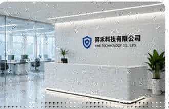

响应快速
7×24 小时快速响应，紧急故障优先处理，最大程度减少停机损失。
企业 / 工厂 / 门店 / 家庭 全场景电脑运维、
网络布线、监控安防安装与维修

翌禾科技有限公司专注于弱电信息化领域，为企业、工厂、门店与家庭提供一站式的弱电信息化配套解决方案。我们以专业的技术、可靠的服务和高效的响应，帮助客户构建稳定、安全、智能的弱电系统环境。
我们的服务涵盖电脑运维、网络布线、监控安防安装与维修等多个领域，拥有经验丰富的工程师团队与完善的服务体系，能够快速响应客户需求，提供定制化、可落地的解决方案。
我们坚持“响应快、报价透明、施工规范、售后稳定”的服务理念，致力于成为客户信赖的长期合作伙伴。
7×24 小时快速响应，紧急故障优先处理，最大程度减少停机损失。
标准化报价体系，明细清晰无隐形费用，按需定制，性价比更高。
严格执行施工标准与规范，线缆整齐美观，验收流程完整可靠。
完善的售后保障体系，定期回访与巡检，长期合作更安心。
电脑运维与系统优化 · 网络与服务器维护 · 定期巡检与故障处理
门店电脑运维支持 · 网络设备检查维护 · 上门巡检与问题排查
综合布线与弱电搭建 · 监控安防设计安装 · 设备维护与技术支持
家庭网络覆盖优化 · 监控安防安装维修 · 电脑故障快速上门